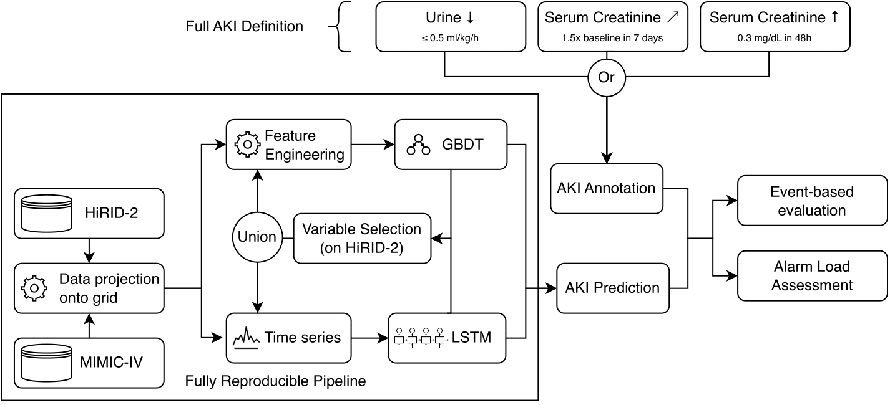

Selected Research Projects
Click a card to expand the project description.
AI Tumor Board: An Agentic AI Framework for Precision Oncology Decision Support

The AI Tumor Board is a multi-institution research program (USZ, KISPI, UZH) that I co-manage as part of my postdoctoral work at the Krauthammer Lab. The project aims to develop and clinically evaluate an AI-driven platform for precision oncology that provides oncologists with both evidence-based and data-driven treatment decision support for adult and pediatric cancer patients.
Cancer treatment decisions fall into two scenarios: standard of care (guided by clinical guidelines) and beyond standard of care (where trial evidence is absent and treatment becomes increasingly individualized). Most cancer patients eventually progress to the latter, making AI-powered solutions critical for complementing guideline-based treatment. The AI Tumor Board framework addresses both settings through three integrated work packages:
WP1 — Guideline-Driven Decision Support (Standard of Care)
We leverage Large Language Models (including Meditron and RAG pipelines) to convert free-text clinical guidelines (ESMO, NCCN, OncoKB) into structured, queryable Knowledge Graphs adhering to the SPHN schema. This enables automated matching of patient characteristics—extracted from clinical notes via NLP—to relevant treatment recommendations. The structured representations are validated by clinicians through a human-in-the-loop strategy, mitigating hallucination risks. The system is designed for multi-cancer coverage: melanoma, NSCLC, ovarian cancer (adults) and leukemia, brain tumors, sarcoma (pediatric).
WP2 — Data-Driven Predictive Models (Beyond Standard of Care)
For patients beyond standard-of-care, we train multimodal ML models on retrospective EHR data (clinical, genetic, and multi-omics profiles) to predict personalized treatment response (progression-free survival) and side effects (adverse events). The approach integrates counterfactual causal ML for treatment selection, conformal prediction for uncertainty quantification, and SHAP for interpretability. Models are trained on patient cohorts from USZ, KISPI, and the Swiss Precision Oncology network (~4,000+ patients).
As a concrete downstream application of WP2, we developed a framework for individualized progression-free survival (PFS) estimation across successive lines of metastatic breast cancer therapy. See our preprint for more details.
WP3 — Interactive AI Dashboard
Technologies from WP1 and WP2 are integrated into a clinician-facing interactive dashboard deployed for silent evaluation during actual tumor board meetings at USZ and KISPI. The dashboard presents personalized guideline matches, predicted treatment outcomes with uncertainty bounds, and explainable risk factors—enabling multidisciplinary teams to make informed, collaborative decisions at the point of care.
Machine Learning for Kidney Transplant Outcome Prediction

This project develops interpretable machine learning frameworks for predicting kidney transplant outcomes at multiple stages, using data from the Swiss Transplant Cohort Study (STCS) spanning 6 transplant centers and over 4,700 recipients across 13 years. The work is organized into two complementary sub-projects covering the full transplant journey.
Sub-project 1: Pre-transplant Baseline Prediction
Using multi-modal pre-transplant inputs — recipient demographics, donor characteristics, laboratory values, immunological matching (HLA mismatches, DSA, PIRCHE scores), and transplant logistics — we predict multiple post-transplant outcomes including patient survival, graft loss, graft function (eGFR), and rejection events (AMR, TCMR). The model operates on 51 features across recipient, donor, and static categories to provide pre-operative risk stratification.
📄 Manuscript (under review)Sub-project 2: Post-transplant Longitudinal Prediction

Rather than relying solely on baseline factors, this sub-project introduces a two-stage framework that captures patients' evolving health status. A baseline model predicts year-1 outcomes from pre-transplant data, while a follow-up model incorporates annually updated clinical and laboratory measurements to predict year t+1 risk. Using LightGBM with SHAP-based interpretability, the models achieve AUROC up to 0.896 for graft loss and 0.797 for mortality, significantly outperforming static baseline-only approaches.
📄 npj Digital Medicine (2025)Deep Learning Uncovers Sequence-Specific Amplification Bias in Multi-Template PCR

Multi-template PCR is fundamental to many sequencing protocols, yet it introduces sequence-specific amplification biases that skew amplicon abundance. In this work, we trained 1D convolutional neural networks on synthetic DNA pools to learn per-template PCR amplification efficiency, achieving AUROC/AUPRC of up to 0.88/0.44 — greatly outperforming baseline models relying on GC content alone.
We developed CluMo, a novel motif-discovery framework that extracts interpretable sequence motifs from the trained deep learning models. CluMo revealed that specific CGTG-based motifs near adapter binding sites cause inhibition through adapter-template self-priming — a mechanism previously disregarded in PCR. This finding was validated experimentally using degenerate primers that suppressed self-priming and restored amplification efficiency.
📄 PDFPersistent Complement Dysregulation with Signs of Thromboinflammation in Active Long Covid

We analyzed the serum proteome of COVID-19 patients up to twelve months post-infection, revealing persistent complement system activation and thromboinflammation. Terminal complement complex formation was altered, with increased C5bC6 complex and decreased C7 incorporation. A prominent thromboinflammatory response, marked by elevated von Willebrand factor and diminished antithrombin III levels, was linked to clinical persistence of Long Covid symptoms.
Machine learning techniques were applied to analyze over 6,500 protein expression levels, enabling identification of key biomarkers and mechanistic insights. This approach provided a robust basis for developing targeted diagnostics and therapeutic interventions for the ongoing immune and coagulation abnormalities in Long Covid.
📄 PDFDetecting Genetic Interactions with Visible Neural Networks

This work investigates detecting non-linear genetic interactions among SNPs, genes, and pathways using visible neural networks that incorporate prior biological knowledge (gene and pathway annotations) to create sparse, interpretable architectures. We adapted and accelerated multiple post-hoc interpretation methods — including PathExplain, RLIPP, NID, and DFIM — and benchmarked them on simulated data.
Applied to a genome-wide case-control study of inflammatory bowel disease, the methods showed high consistency in identifying epistasis pair candidates, with follow-up association testing revealing seven significant epistasis pairs. This demonstrates the power of biologically-informed neural networks for uncovering complex genetic interactions.
📄 PDFAn Empirical Study on KDIGO-Defined Acute Kidney Injury Prediction in the ICU

Traditional AKI prediction models relying solely on creatinine levels delay detection due to the lagging nature of serum creatinine changes. By integrating both creatinine and urine output into the KDIGO definition, we developed a gradient-boosted decision tree (GBDT) model enhanced by a novel time-stacking method that significantly outperforms existing LSTM models in precision and reduced false alarms.
The GBDT model handles diverse ICU data across different systems and demographics, performing robustly regardless of patient cohort specifics. This work improves predictive accuracy for timely AKI intervention and contributes to better resource allocation and patient management in ICUs.
📄 PDFUnsupervised Manifold Alignment with Joint Multidimensional Scaling

We introduced Joint Multidimensional Scaling (Joint MDS), a method to map data from two distinct domains into a common low-dimensional Euclidean space without prior knowledge of correspondences. By integrating MDS with Wasserstein Procrustes analysis into a joint optimization framework, the approach simultaneously embeds data and learns instance correspondences based solely on intra-dataset dissimilarities.
Joint MDS proves effective across joint dataset visualization, unsupervised heterogeneous domain adaptation, graph matching, and protein structure alignment. Its unsupervised nature and reliance on intra-dataset dissimilarities make it a powerful tool for complex multi-domain data integration in bioinformatics and machine learning.
📄 PDF